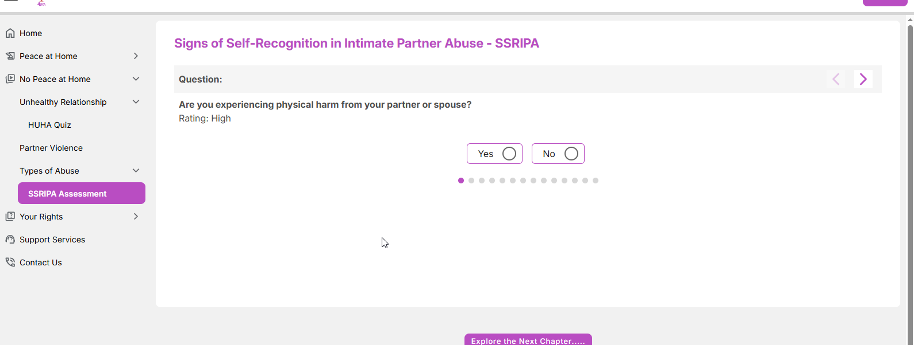
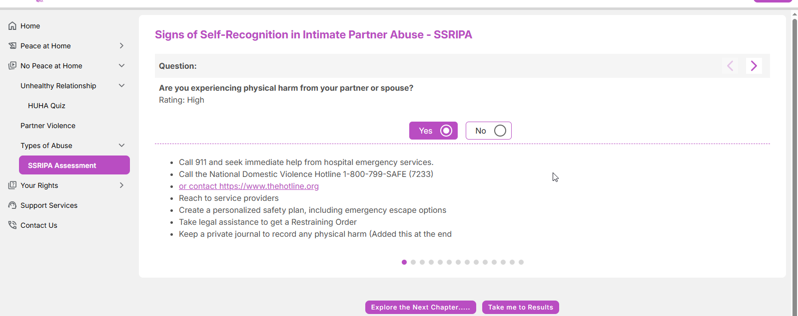
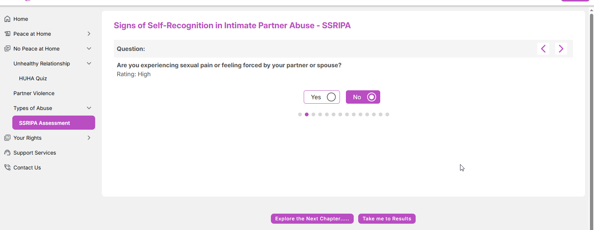
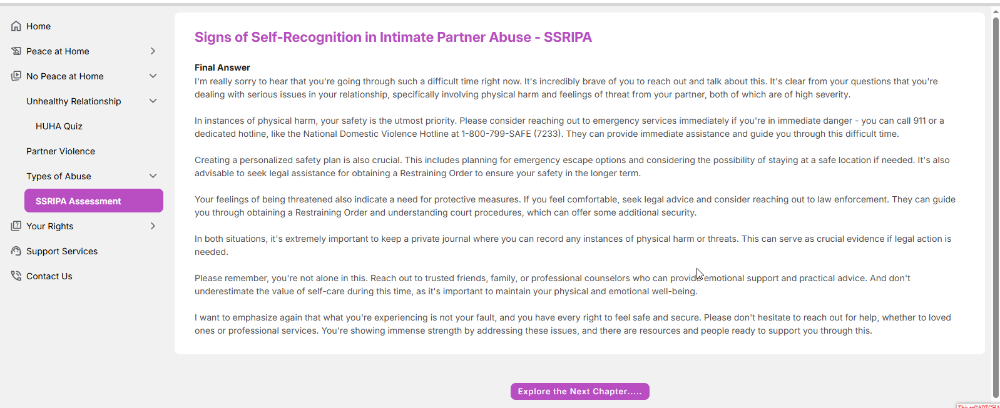
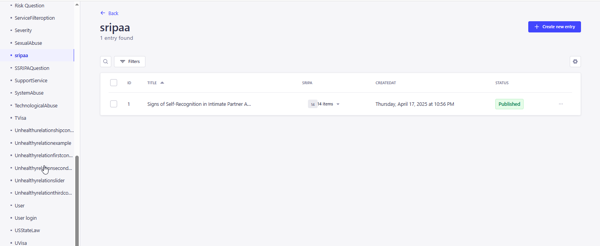
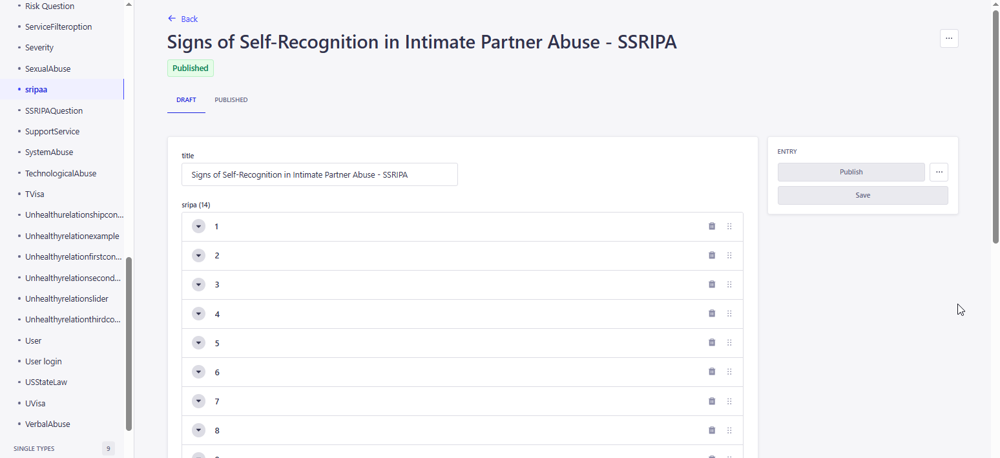
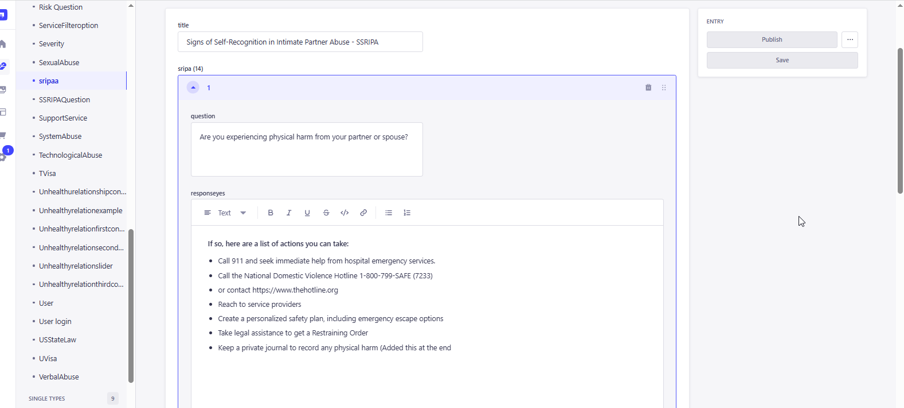
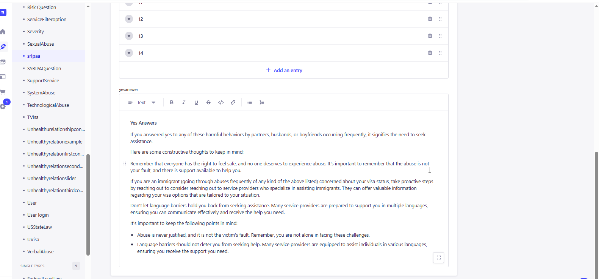

<link rel="stylesheet" href="../css/styles.css">
 
<main>
        <h2>Signs of Self-Recongnition in Intimate Partner Abuse - SSRIPA</h2>
        <p> It is an information on recognizing signs of intimate partner abuse and self-recognition in such situations. 
            Here are some key points: Emotional Abuse, Self-Compassion and Mindful Self-Compassion <br><br>
        1. The user inputs a valid URL to launch the Education Module and the URL is : 
           <a target="_blank" href=https://happy-grass-02e46c50f.6.azurestaticapps.net/sripaa>SSRIPA</a> <br>
        2. The Quiz page will show the Scenarios in pagination view, the user need to navigate from one question to another question using the pagination icon below the question
           or by using the Forward and Backward arrow for selecting the question and answer it.<br>  
            <br><br>
           If the User select the Answer as Yes , then the Answer section will expand and shows the answer.<br>
            <br><br>
           If the answer is No. Nothing will appear and the user moves to next question to take the test.<br>
            <br><br>
           Once the user completed the test , then the "Take me to Results" button appear, the Final Answer page will appear once the user hit the button. <br>
             <br><br>
           The Admin user must access the CMS site in order to add, edit, and update the material on the page..<br><br>
           Go to CMS > Content Manager > Select and open the 'sripaa' from the side menu.
           Click and open any state to update the content.<br>  
           For create a new question, user need to click on the create New Entry button.<br>    
            <br><br>
           The User can open and view all the questions created previously <br>  
            <br><br>
           Also, the user can edit the question that was created previously by selecting any of the question from list <br>
            <br><br>
            <br>
           Update the content if required and Click on Publish to make the changes refelects in the application. <br>
        </p>                 
</main>